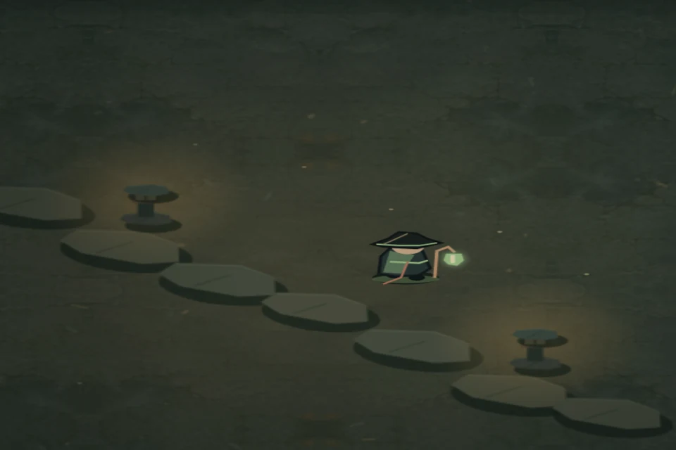
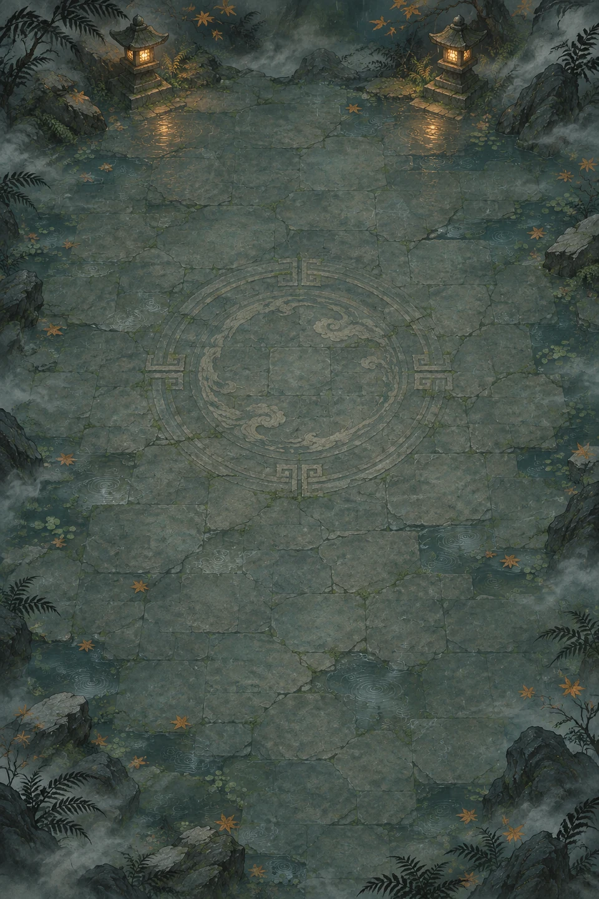

武器を選択してください
刃や槍からフック、鞭、ハンマー、流星ハンマーまで、30 人の番人がさまざまな射程、リズム、攻撃の形をもたらします。
霧の中のランタン
ランタンがひとつ。ある夜。夜明けまで立ってください。
霧が立ち込めると、生き物たちが石段を降りていきます。番人を選んで山に入り、短く緊張感のある夜番を経て道を見つけてください。

静かなサバイバルゲーム
番人を選択し、大群の中を移動し、経験を集め、祝福と突破口を通してそれぞれの実行を形作ってください。すべてのアップグレードにはトレードオフが伴います。次の波でそれが試される。
刃や槍からフック、鞭、ハンマー、流星ハンマーまで、30 人の番人がさまざまな射程、リズム、攻撃の形をもたらします。
レベルアップするたびに、3 つの祝福のうち 1 つを選択します。攻撃、クリティカルチャンス、射程、移動、生存がビルドをさまざまな方向に導きます。
5ステージごとにガードバトルが到来。現在のルートにいるすべての衛兵を倒して突破し、山の奥深くまで歩いていきます。
ひとつの時計の形
キャラクターは自動的に攻撃するので、霧の中での位置取り、タイミング、次の決断に注意を向けることはありません。

選べる役割とその戦い方を選択し、最初の道を照らすルートを選択します。
経験と装備を収集し、武器と状況に合わせてビルドを徐々に形づくる祝福を選択します。
アリーナ内のすべての警備員を倒してステージのロックを解除します。最終決戦をクリアするとルートクリアとなる。
霧の中の小道
雨に照らされた石造りの中庭からアシが生い茂る水辺まで、それぞれのルートは少しずつ進んでいきます。前進するたびに、次のランタンに出発点が与えられます。

山門を抜けると雨に輝く石段。

警備員が到着する前に鐘が鳴る。

ルートが明確になった後も、大群は霧の中を上昇し続けます。
光の中にいてください
Mistwick Vigil はシングルプレイヤーのオフライン体験に重点を置いています。問題を報告するときは、デバイスのモデル、Android のバージョン、アプリのバージョン、問題が発生するまでの手順を含めてください。機密性の高い個人情報は含めないでください。
設定、ロック解除、進行状況はデバイス上に残ります。アプリのストレージをクリアするか、アプリをアンインストールすると、それらは削除されます。クラウドと同期されません。
コアのゲームプレイはオフラインでも動作します。リモートでホストされているプライバシー ポリシーまたは規約を開くには、インターネット接続が必要です。
現在のバージョンのプライバシー ポリシーと利用規約をお読みください。